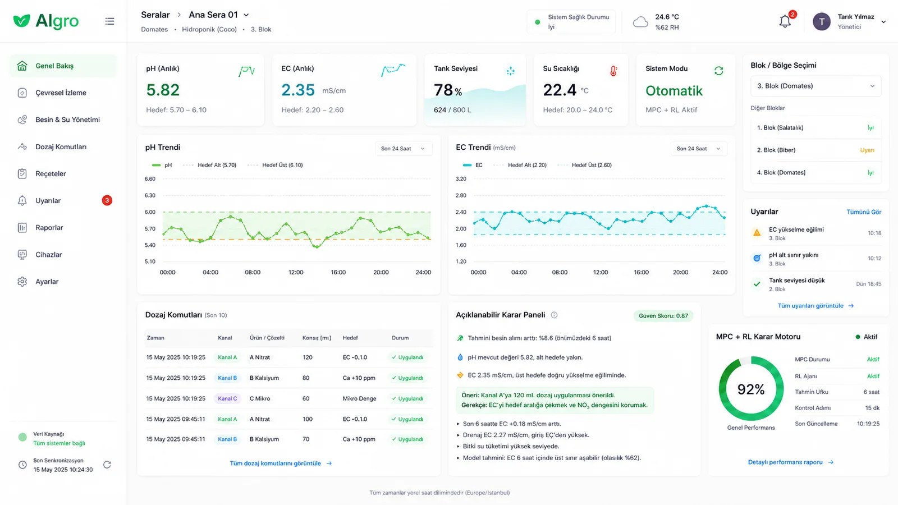
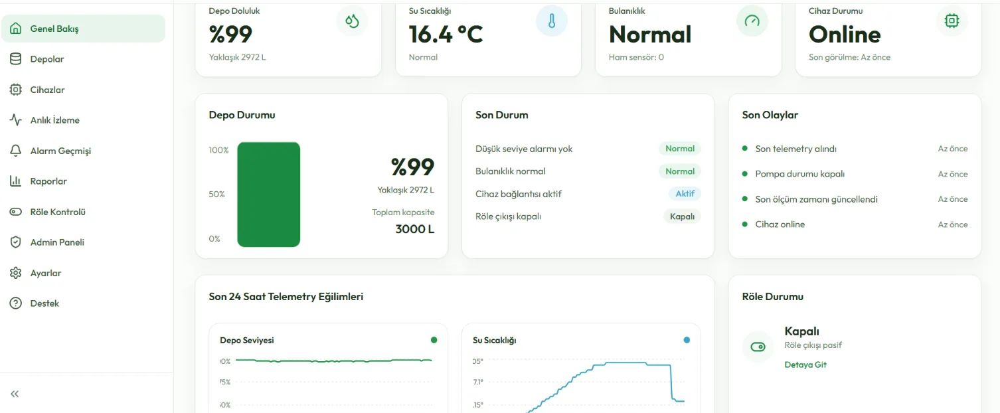
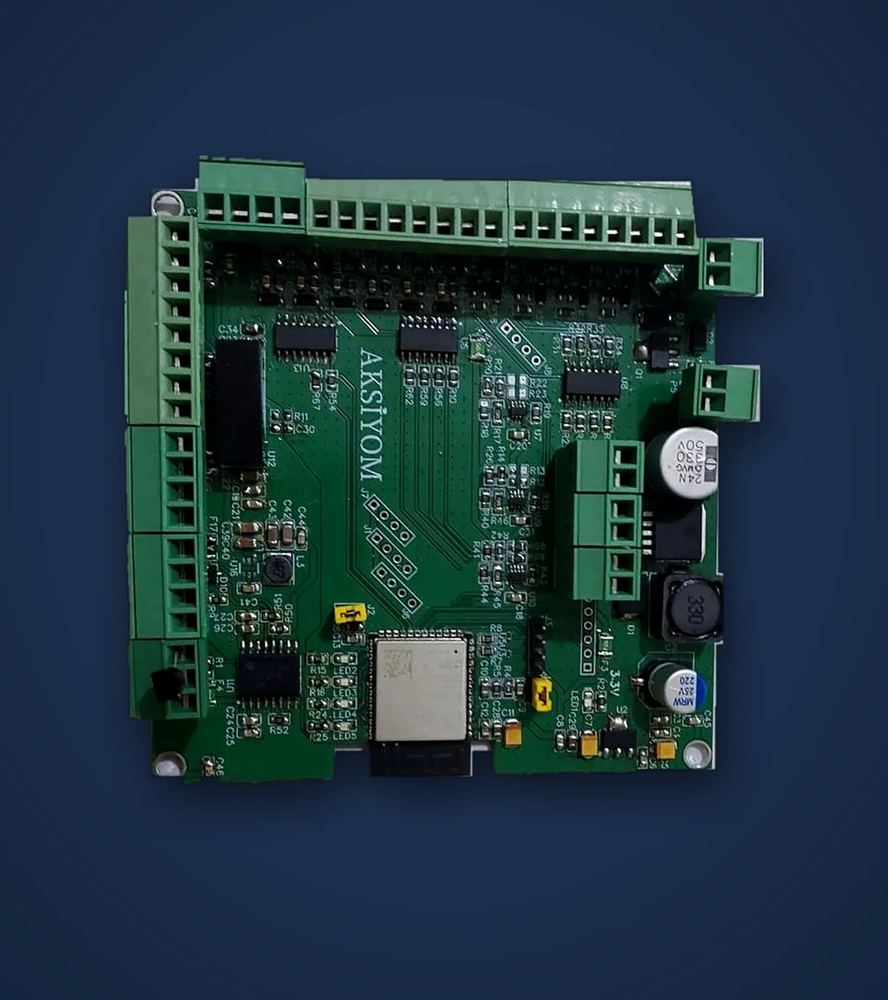
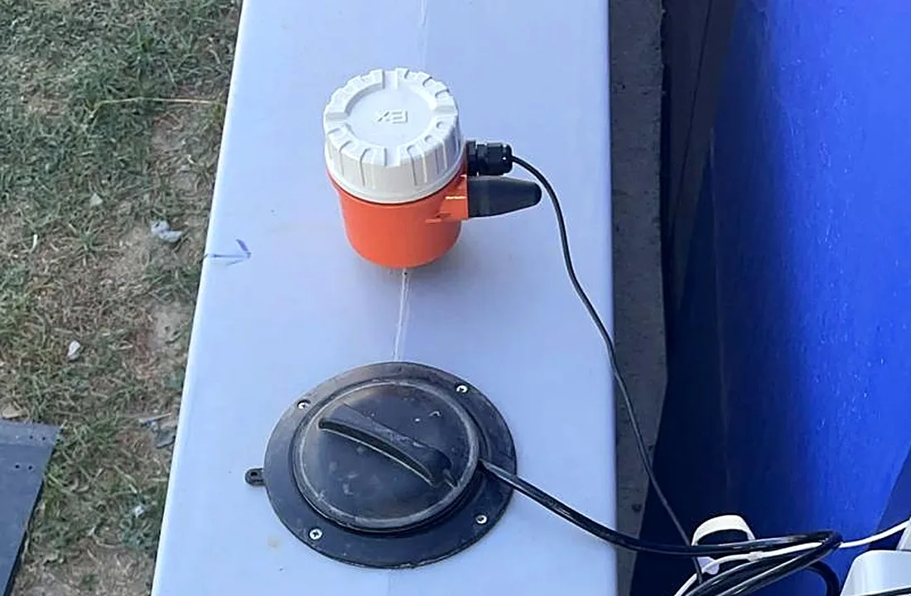
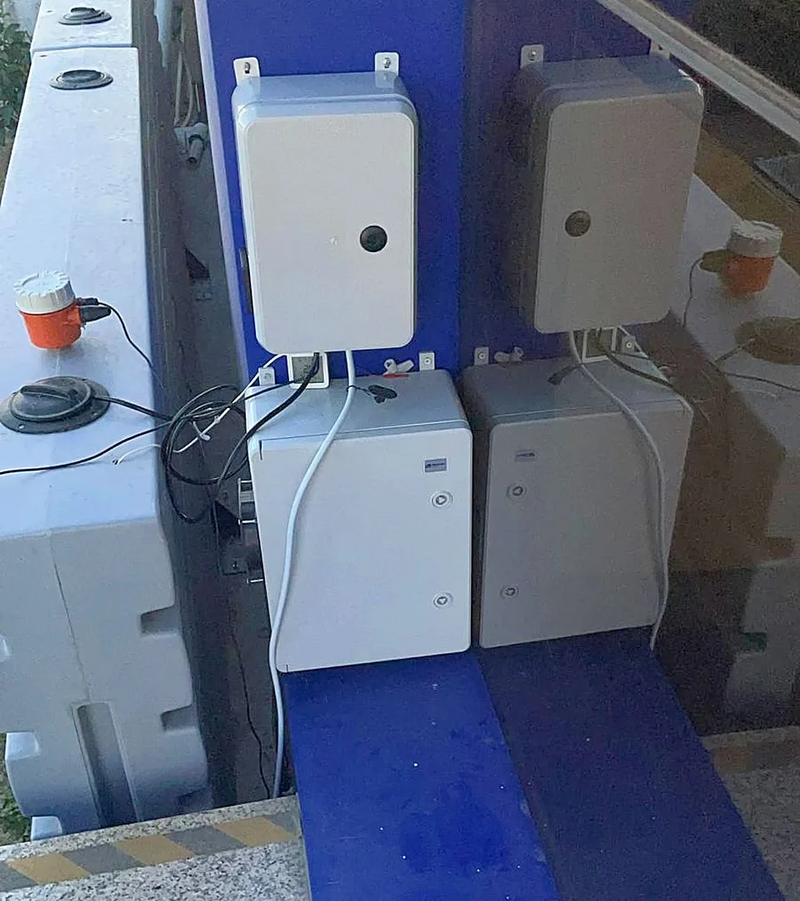

Yapay zekâ pompaya doğrudan dokunmaz
Her dozaj komutu kartın üzerindeki bağımsız güvenlik katmanından geçer.
AKSİYOM İleri Teknoloji ve Ar-Ge
AIgro; depodaki suyu uzaktan izleyen Su Takip Sistemi ile topraksız serada pH ve EC'yi önceden tahmin edip güvenli dozlayan Akıllı Besin Dozajlama'yı tek altyapıda birleştirir.

Nasıl çalışır
Seviye, sıcaklık ve bulanıklık; dozajlamada pH ve EC.
Kendi tasarımımız; veriyi okur, buluta taşır, pompayı yönetir.
Canlı izleme, alarm, rapor ve uzaktan kontrol.
Uzaktan ya da güvenlik sınırları içinde otonom.
Kart, yazılım ve kurulum aynı ekipten: tek muhatap, hızlı uyarlama.
Depodaki suyu uzaktan izler, sorun büyümeden haber verir. Var olan depoya sensör takılır; kurulumdan sonra her şey panelden izlenir.

Topraksız serada pH ve EC'yi önceden tahmin eden, kararını açıklayan, güvenli otonom dozaj.
Elle ya da sabit eşikle yapılan dozaj geç kalıyor; gübre ve su boşa gidiyor, kökler strese giriyor.
pH, EC, su sıcaklığı, tank seviyesi
Yapay zekâ pH/EC'nin gidişini tahmin eder, en az dozu seçer
Kontrol kartı her komutu güvenlik sınırlarına göre denetler
3 kanal: Besin A · Besin B · pH düzenleyici
Her dozaj komutu kartın üzerindeki bağımsız güvenlik katmanından geçer.
Bağlantı koptuğunda sistem yerelde çalışmaya devam eder.
Panel her dozu kanal ve miktarıyla kaydeder, neden verildiğini açık dille gösterir.
Rakamlar literatüre dayalı hedeflerdir, garanti değildir. Pilot sahada ölçülüp sonuç ne çıkarsa olduğu gibi raporlanır.

Sensörleri okur, pompayı yönetir, veriyi buluta taşır. Tek donanım iki ürünü besler.
Sahada ve projelerde


Su takip sistemimiz çalışıyor
Su takip sistemimiz çalışıyor
AB destekli ortak projemiz
Birlikte çalışalım
Bir sera hattında AIgro besin dozajlamayı birlikte deneyelim.
Depolara su takip sistemini kuralım, panelden birlikte izleyelim.
Sahadaki gözünüzle eksiklerimizi söyleyin, birlikte uyarlayalım.
Kısa bir görüşmede su takip panelini canlı açar, dozajlama pilotunu birlikte planlarız.